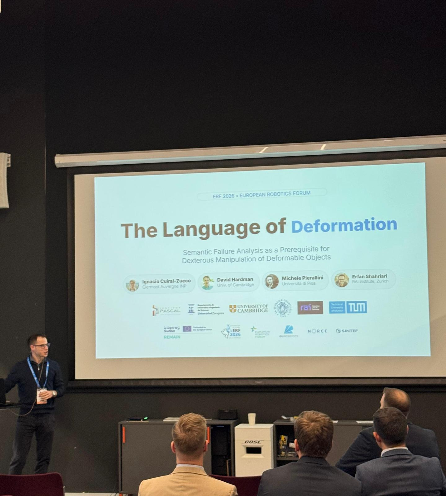
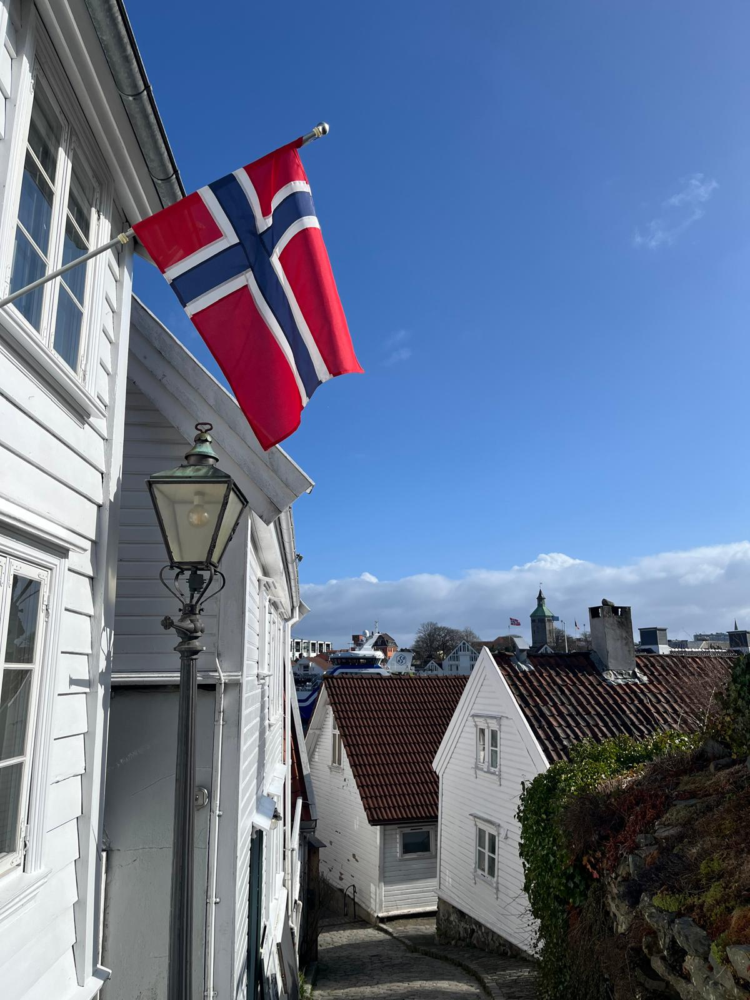
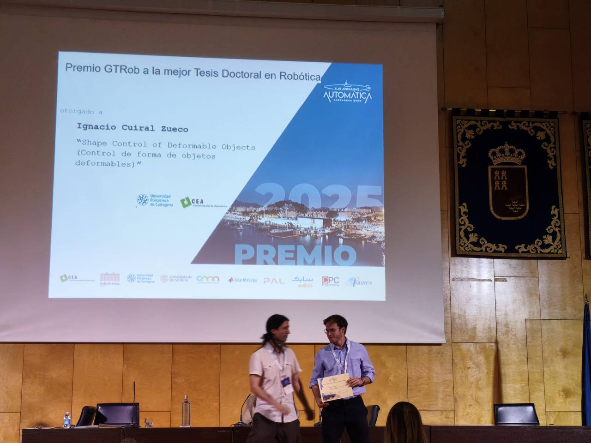
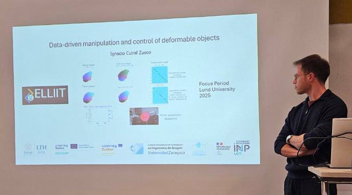

🏆 Engineering and Architecture PhD Thesis Excellence Award (2026), University of Zaragoza .
Paper presented at ERF 2026
I presented our paper "The Language of Deformation: Semantic Failure Analysis as a Prerequisite for Dexterous Manipulation of Deformable Objects" at ERF 2026 in Stavanger, Norway, coauthored with David Hardman, Michele Pierallini and Erfan Shahriari. We met last year as finalists for the Georges Giralt PhD Award, each from a different institution in Europe, and ended up writing a paper together. A great example of what conferences like ERF are for :)

Paper presentation at ERF 2026

Stavanger, Norway
🏆 Best Robotics PhD Thesis Award (2025), Spanish Committee of Automatic Control (CEA).

CEA Best Robotics PhD Thesis Award
🏆 Best Iberian Robotics PhD Thesis Award (2025), conferred by the Spanish Society for Research and Development in Robotics (SEIDROB) and the Portuguese Robotics Society (SPR).
🏆 Georges Giralt PhD Award Finalist (2025): finalist for Europe's most prestigious recognition for PhD excellence in robotics, selected among over 50 candidates and presented at the European Robotics Forum 2025.
Invited Visiting Scholar
ELLIIT Focus Period 2025 on robot learning, Lund University, Sweden

ELLIIT Focus Period · Lund University 2025
Highlighted Publications
I. Cuiral-Zueco and G. López-Nicolás, "Time Consistent Surface Mapping for Deformable Object Shape Control," IEEE Transactions on Automation Science and Engineering, vol. 22, pp. 11099–11111, 2025, doi: 10.1109/TASE.2025.3529180.
I. Cuiral-Zueco and G. López-Nicolás, "Multiscale Procrustes-Based 3-D Shape Control," IEEE/ASME Transactions on Mechatronics, vol. 29, no. 3, pp. 1738-1748, June 2024, doi: 10.1109/TMECH.2023.3325934.